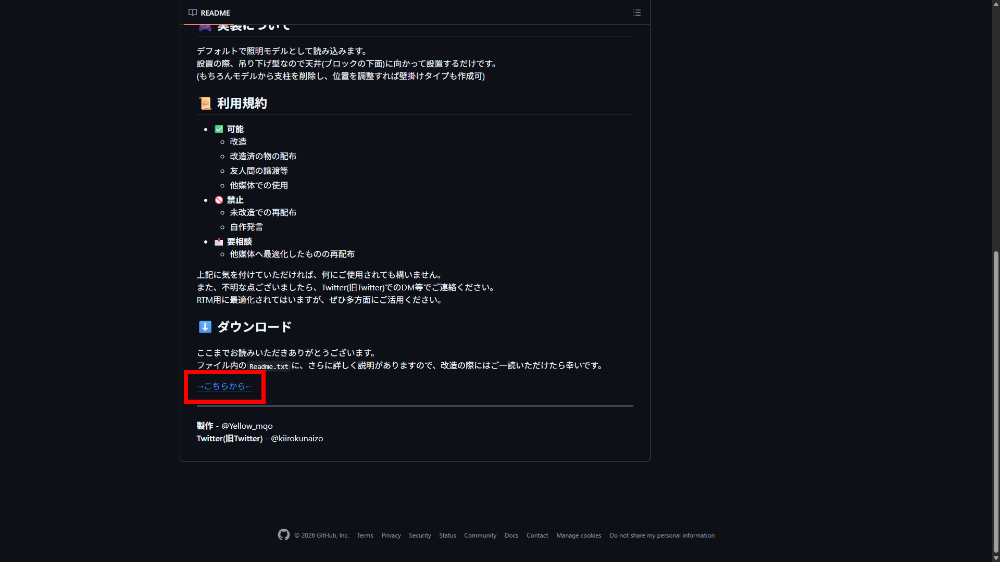
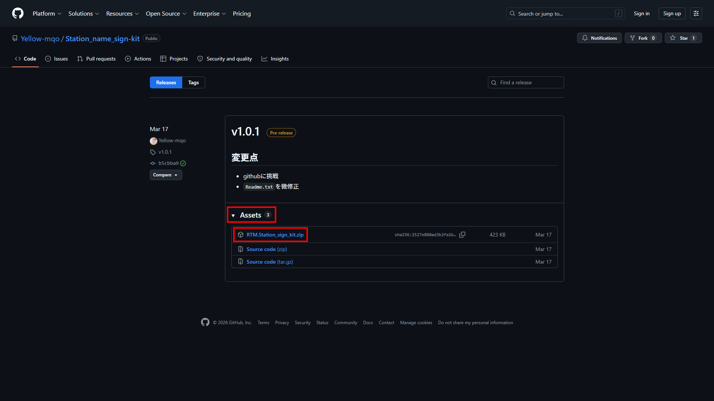

ダウンロード方法
GitHub使ってるよ
導入
黄色電機では、GitHubにて配布を行っております。
GitHubに慣れている方であれば難なくダウンロードが可能かと思います。
このページでは、そうでない方、また日本語を読める方に向けて方法を説明するページとなっております。
手順
当サイトでは、各配布ページにてGitHubへ遷移するボタンを設置しております。
必ずREADMEをお読みいただいたうえで、下ヘスクロールしていくと、リンクがございます。

リンクを踏んでいただくと、最新版が開きます。
Assetsより下は閉じた状態なので、上の赤枠部をクリックして展開します。
展開したのち、(パック名).zipとなっているものをクリックしていただくと、ダウンロードが開始されます。

その他
ダウンロードについて不明な点があれば、一度お手持ちのデバイス・お手持ちのブラウザにて検索していただき
それでも解決しない場合にのみ、都合のいい手段にてご連絡ください。